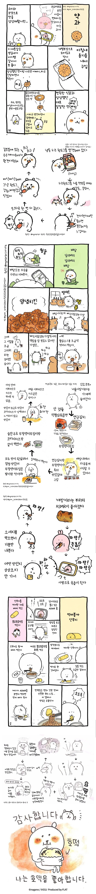

<치이카와> 작가의 한국음식 후기 .manhwa
댓글
핵불닭이면 은근히가 아닌거 같아요 슨생님
대창보다 소시지가 맛있다고 생각해
와 이게 치이카와 작가였구나
나도 농담곰 작가가 치이카와 작가라는 거 오늘 처음 알았음 ㅋㅋ
토끼가 이전 세계관에서는 치이카와 괴롭히던 캐릭터였다던데 그게 좀 신기함
이건 알고 있었는데 이제 보니까 저 캐릭터가 농담곰이어서 놀랐음ㅋㅋㅋ
둘이 닮았자너 ㅋㅋ
또박또박 쓴 한글이 너무 귀엽당
요리하는 만화도 렉카해줘
유개가서 야추 누르고 옴
낭심곰 작가가 치이카와엿구나
진짜이거너무명작임
진짜 몽글몽글하게 너무귀여워
라면에 단무지
만화방에 형 따라서 가면 신라면에 떡과 달걀 넣은 라면 사줬었는게 거기서 처음으로 라면에 단무지 조합 알게됨
지금도 계란 푼 떡라면에 다꽝이 나한텐 제일 맛있는 라면이야
단무지는 너네꺼잖아 ㅋㅋ
몇천억 벌었는데 비싼거 먹겠지 이제는..
몇천억이 뉘집 개이름인가요
몇천억 버는건 시간문제겠지
몇천억은 무리고 몇백억은 벌었을듯
핵불닭같은 음쓰를 좋아하다니
맛알못이군
일본 단무지랑 많이 다른가
일본 단무지는 심이 좀 살아있는 느낌임
한국보다 딱딱?한
단무지 자체는 일본거긴 한데 일본식은 말려서 소금치고 곡식들은 통에 넣는거고 식초에 절이는건 우리나라에서 시작됬다네
다꽝 단무지 너네꺼잖아ㅋㅋ
일본식 단무지는 수분빠진 시고 짠 무말랭이 같은 느낌이라..
한국식이랑 좀 많이 다르더라.
핵불닭을 어떻게 ㄷㄷㄷ
핵불닭 엄청 맵다던데 저걸 먹네 근데 까르보불닭이랑 단무지가 잘 어울리나? 안어울릴거같은데
쓰읍 조만간 핵불닭 먹어봐야겠다

기본적으로 걍 개귀여운 사람이네 ㅋㅋㅋㅋㅋㅋㅋㅋㅋㅋ
무해하고 먹을 거 좋아하는, 소박한 것에도 과장되게 즐거워 하는 사람.
보기만 해도 흐뭇해짐 ㅋㅋ
연근김치는 뭘까
핵불닭 어케먹냐... 그냥 불닭도 맵구만
아하 이 작가가 그 부랄로만 서있는 것들을 그린 모양이구만
나보다 매운거 잘먹네;
나가노 작가 은근 매운거 좋아하는거 같음